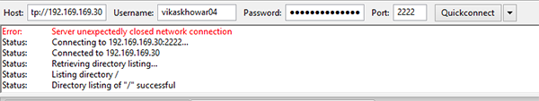

Setting up configuration of ProFTPd to use SFTP instead of FTP on Debian and Ubuntu, Security, Linux Basics.
Configure ProFTPd to use SFTP instead of FTP – Debian, Ubuntu
Difficulty: 1
Time: 20 minutes
ProFTPd is a File Transfer Protocol (FTP) server and an open source software, compatible with Linux/Unix systems and Microsoft windows. SFTP (Secure File Transfer Protocol) which stands for SSH File Transfer Protocol, or Secure File Transfer Protocol, is a separate protocol packaged with SSH that works in a similar way over a secure connection.
In this article, you will learn about configuration of ProFTPd, to use SFTP on Debian and Ubuntu.
You need sudo privileges to run the commands.
Install ProFTPd
- Update all the packages of operating system and install
proftpd package using the following commands:
sudo apt-get -y update
sudo apt-get install proftpd
- Open the configuration file of
proftpd.
Sudo vim /etc/proftpd/proftpd.conf
- Change the
ServerName parameter to match your domain name or IP address.
ServerName "your_Domain_Or_IP_Address"
- Uncomment the following line:
DefaultRoot ~
- Save and exit the file by pressing the Esc key, and then typing :wq, followed by the Enter key.
Configure SFTP access with ProFTPd
- Create a blank file in the
/etc/proftpd/conf.d/ directory, to configure SFTP.
sudo vim /etc/proftpd/conf.d/sftp.conf
- Add the following lines into the file:
<IfModule mod_sftp.c>
SFTPEngine on
Port 2222
SFTPLog /var/log/proftpd/sftp.log
# Configure both the RSA and DSA host keys, using the same host key
# files that OpenSSH uses.
SFTPHostKey /etc/ssh/ssh_host_rsa_key
SFTPHostKey /etc/ssh/ssh_host_dsa_key
SFTPAuthMethods publickey
SFTPAuthorizedUserKeys file:/etc/proftpd/authorized_keys/%u
# Enable compression
SFTPCompression delayed
</IfModule>
- Save and exit the file by pressing the Esc key, and then typing :wq, followed by the Enter key.
Configure key based authentication
- Generate an authorized key to create a secure connection.
ssh-keygen
- Go to
/home/UserName/.ssh directory.
Cd /home/UserName/.ssh/
- View the content of the following file.
sudo cat id_rsa
- Copy all the content from this file and save it into a new file on your local Desktop with
.ppk extension. For this article test.ppk is used.
- Create a directory to hold the authorized private key.
sudo mkdir /etc/proftpd/authorized_keys
- Convert the authorized private keys that are currently used to log into the server.
sudo ssh-keygen -e -f /home/UserName/.ssh/id_rsa.pub | sudo tee /etc/proftpd/authorized_keys//UserName
- Restart the ProFTPd service.
sudo service proftpd restart
Disable SFTP access on the SSH port
- Open the configuration file of SSHD to enable SFTP.
sudo vim /etc/ssh/sshd_config
- Comment the following line using # (hash):
Subsystem sftp /usr/lib/openssh/sftp-server
- Save and exit the file by pressing the Esc key, and then typing :wq, followed by the Enter key.
- Restart the SSH server services.
sudo service ssh restart
Connect with a client
- Open FileZilla's preferences and go to Edit → Settings → SFTP.
- Click on Add key file button to add the private key.

- Browse the private file which is saved on local desktop with file name
test.ppk.
- Click OK to save on FileZilla, after adding the private key.
- Restart the ProFTPd service.
sudo service proftpd restart
- Enter Host or IP address, Username, Password and Port number and click the Quickconnect button. FileZilla should connect automatically using your SSH keys.

Conclusion
In this article, you have learnt to Configure ProFTPd, to use SFTP instead of FTP on Debian and Ubuntu.